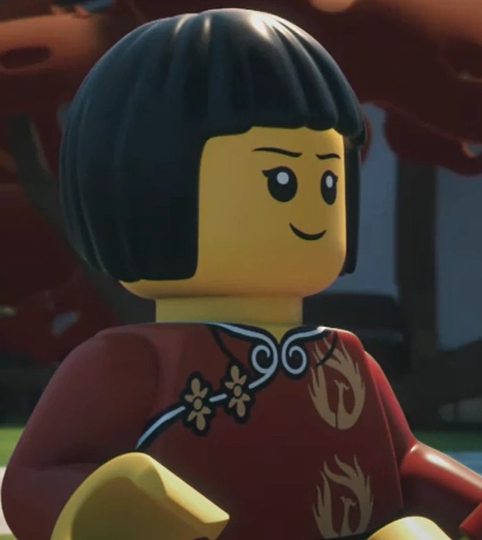
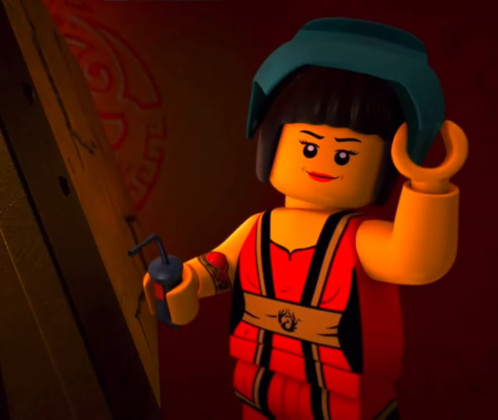
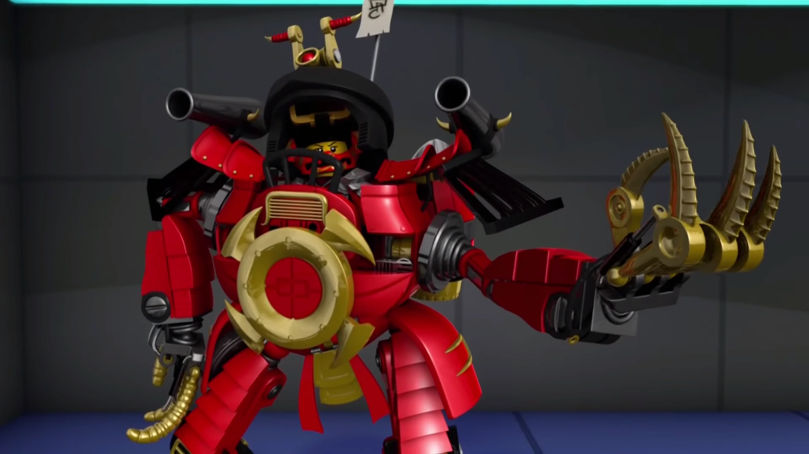
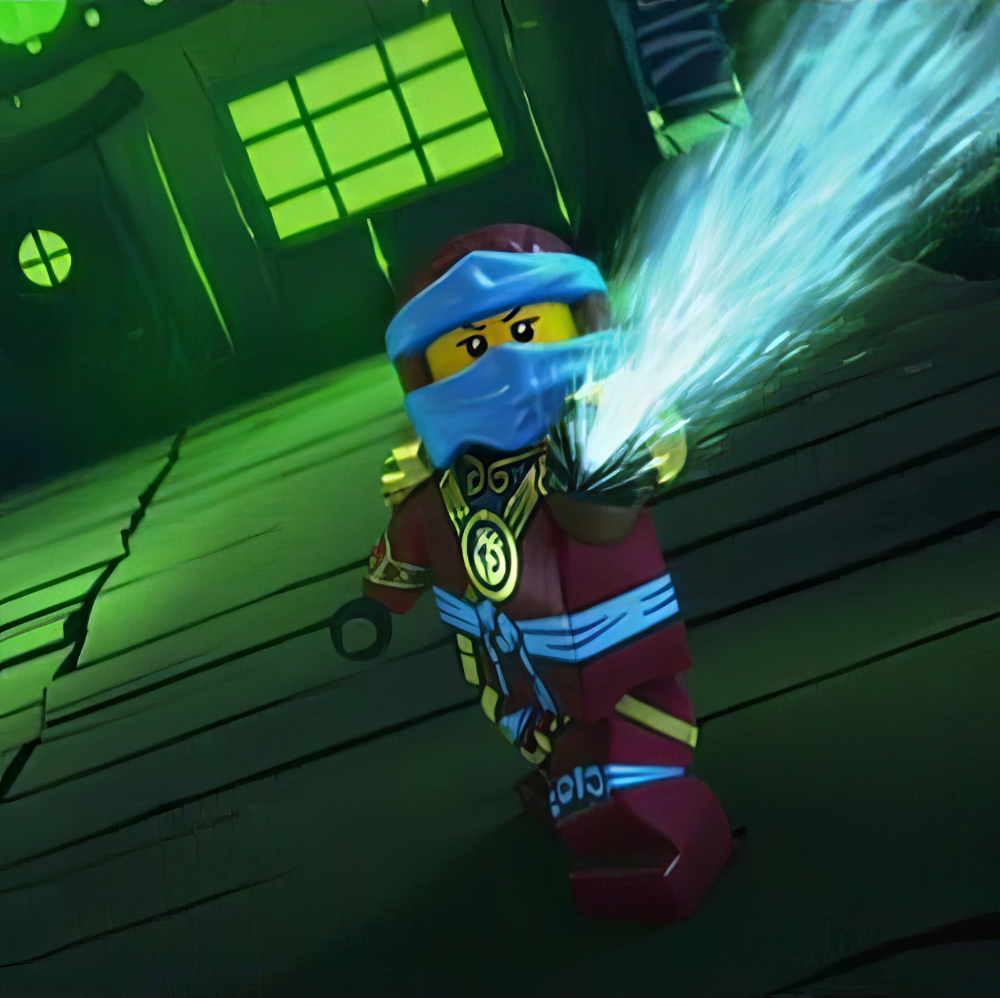
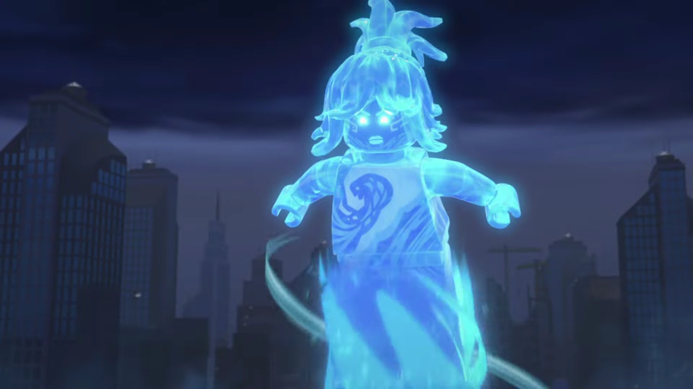
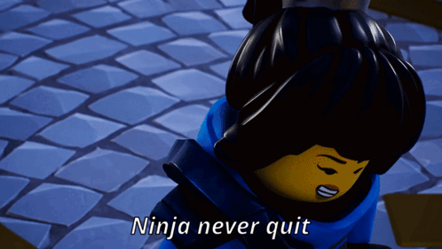

Welcome to the Temple of Flow! Celebrating Nya, the Water Ninja's Journey. Click on the tabs below to explore.
Nya, the Water Ninja, had a troubeled childhood. As a child, she was
curious and adventurous, always eager to explore the world around her.
But her parents were forcefully kidnapped by the Hands of time, leaving Nya with her brother Kai to take care of each other.
This traumatic event fueled her to grow becoming a strong and independent person who cares for others.

When the Ninja team was formed, Nya was the support element of the team, as she didn't know she had elemental powers yet.
She put her technical expertise in handling the Ninja's gadgets and vehicles to good use, as well as maintaining the Destiny's Bounty, the ninja's flying ship she created herself.

Despite her crucial role in supporting the Ninja's effort, Nya quickly felt she's being left behind.
Seeing she could do more, she decided to take on the identity of Samurai X. Nya built a big powerful mech and used it to become a formidable warrior.
She began Assisting the ninja while keeping her identity secret for a while

Nya learned of her inheriting her mother's elemental power after Morro and the ghosts were freed from the cursed realm.
Master Wu, sensing that she was ready and her powers would be crucial to defeat the ghosts, began to train her in the ways of the Ninja, to become the Elemental Master of Water.
She became an essential part of the team. Fighting many foes and protecting her friends. She alongside Kai freed her parents from the hands of time and was the key to defeating them

Nya made the ultimate sacrifice for the sake of her friends and the world. After Wojira, the mighty serpent of wave and storm was unleashed on the realm of Ninjago.
Nya learned that the only way to defeat it was to merge herself with the sea, a process that had the consequence of losing her life and memories. She did not hesitate.

After her sacrifice, Nya's spirit was reborn as the Water Ninja once more.
Thanks to her determination and the love of her friends who schemed a plan to bring her back by stripping her of her power.
She briefly lost her elemental powers, something that broke her heart as she felt useless again. But her powers gradually returned
Nya was back aiding the Ninja team in their quests, carrying with her the memories and lessons learned from her previous life.
